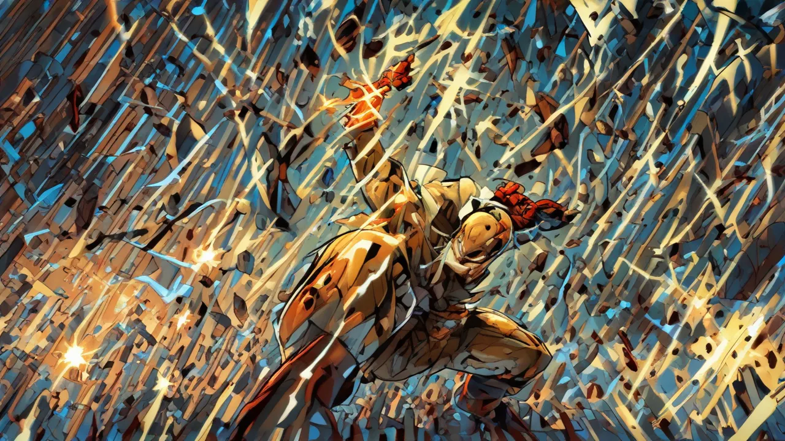
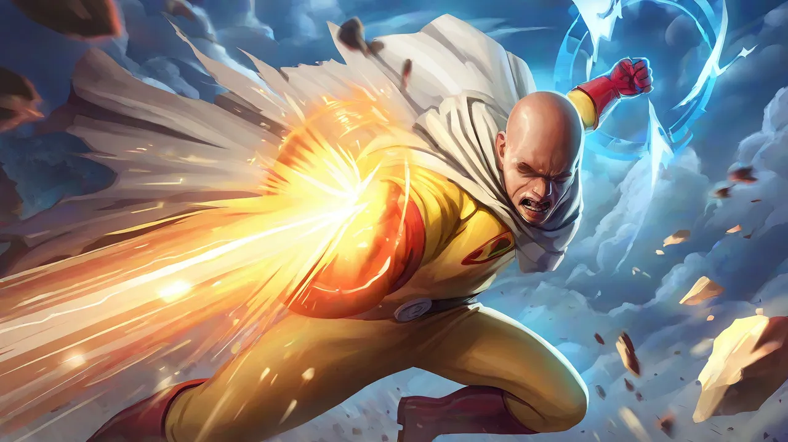
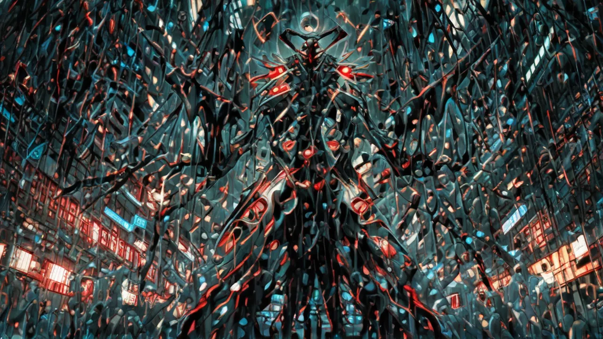
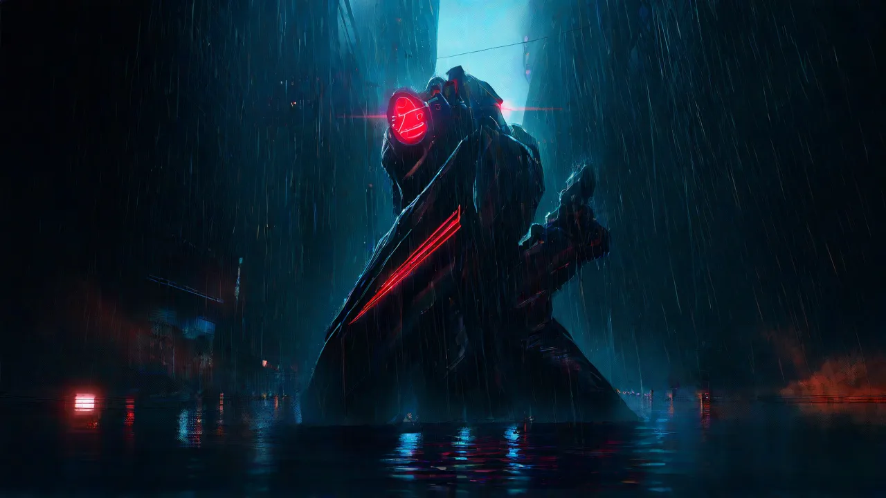
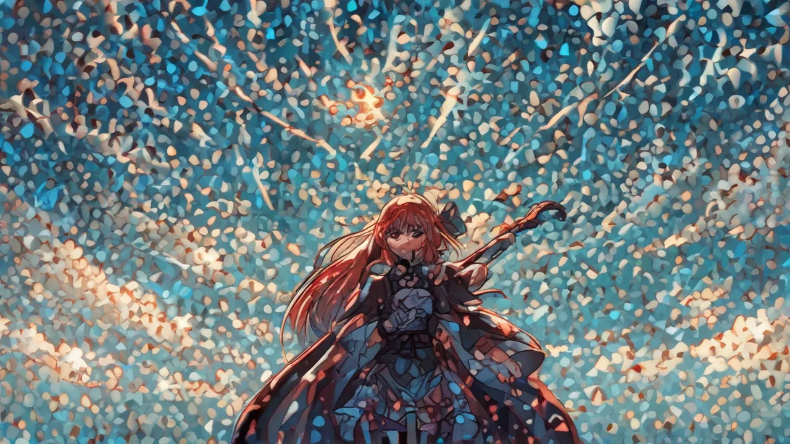
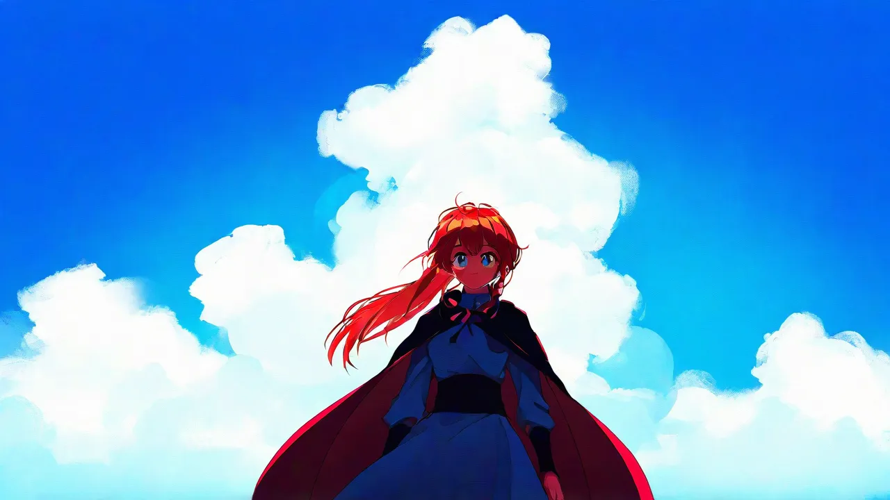
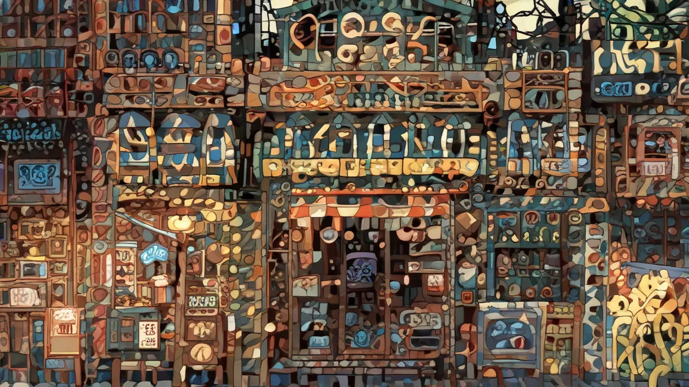
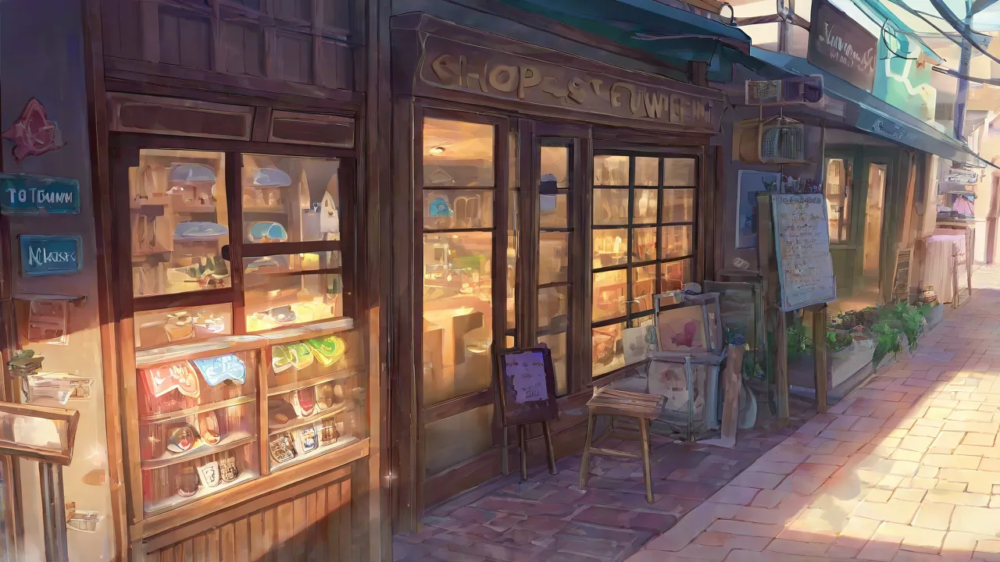

NoobAI-XL: one model, two prediction types, two very different builders
Adding NoobAI-XL looked like a one-line
job — it's an anime fine-tune of Illustrious, which is an SDXL checkpoint, and SDXL checkpoints
are a config-only ckpt: swap on the shared sdxl builder (see
the model menagerie). It half was. The other half needed a
whole new builder, because NoobAI ships in two incompatible flavours and only one of them fits the
matrix's rules.
The fork: eps-pred vs v-pred
NoobAI publishes every version twice — an epsilon-prediction line and a v-prediction line — and they are not interchangeable:
- Epsilon-pred 1.1 predicts noise, like every other SDXL model here. It rides the existing
sdxlbuilder + SDXL Lightning LoRA at cfg 1, 1–8 steps. Config-only, sits right next toillustrious(its parent), directly comparable. Done in five lines ofgallery.ts. - V-pred 1.0 predicts velocity with zero-terminal-SNR. That unlocks true blacks and true
whites (real dynamic range, not SDXL's washed mid-grey) — genuinely better on dark, high-contrast
scenes, exactly the
van/dragon/spiritend of our set. But it demands its own sampler contract:ModelSamplingDiscrete(sampling=v_prediction, zsnr=true)to flip the model,RescaleCFG(0.7)to stop zsnr+CFG from burning the highlights, a real cfg (5) with a real negative, and a long undistilled ladder. It cannot ride the Lightning/cfg-1 path.
Why v-pred gets its own builder — and why that's still "bare"
The bare-sweep invariant says builders carry only functional step-distill LoRAs (the Lightning ones that make 1–4-step generation possible at all), never cosmetic/style/realism enhancers, so the matrix measures the model and not a stack of helpers.
V-pred can't take the SDXL Lightning LoRA — no honest step-distill exists for it that keeps the
comparison fair — so the tempting move is to bolt something on to force it onto the 1–8 ladder.
That's exactly the trap the invariant warns about. So noobaivpred runs bare on its own terms:
native v-prediction sampler, no LoRA at all, a long ladder to a ceiling of 28 — the same posture
as undistilled chroma. It's a new builder in src/graphs.ts,
not a tweak to sdxl; the two never share a code path, so the eps sibling stays pristine.
The payoff is that the gallery now has an honest side-by-side of the same base model under two
prediction regimes: noobai (eps, Lightning, 1–8 steps) and noobaivpred (v-pred, native, up to
28). Two rows, not one pretending to be the other.
What it's actually for — anime, and the receipts
NoobAI is trained on the full Danbooru + e621 tag space: it's an anime model, first and last. Our gallery scenes are all photoreal, which sells it short — so here's a set of throwaway anime prompts that exercise what it's built for. Same seed 42 throughout; eps runs its 4-step Lightning pass (~10 s), v-pred its native 16-step sampler (~45 s). One prompt would be luck; here are four, each probing a different axis.
Their headline act — a shonen hero (One Punch Man energy). Both understand the assignment. v-pred lands a clean, poster-ready caped bald hero mid-punch; eps (fast) reads the same brief but fractures the impact into shards.
| eps · 4 steps · ~10 s | v-pred · 16 steps · ~45 s |
|---|---|
 |
 |
Where v-pred alone wins — a dark mecha (Evangelion at night). This is the whole reason it exists: true black, a single burning red eye, rain on wet streets. eps sits at mean grey ~68 — it literally cannot reach the dark — and collapses into a symmetric blob.
| eps · 4 steps · ~10 s | v-pred · 16 steps · ~45 s |
|---|---|
 |
 |
Bright flat cel-shading (Slayers daylight). Even here — bright, even light, eps's supposed comfort zone — the generic SDXL Lightning LoRA stipples the sky into confetti while v-pred holds a clean 90s-anime flat.
| eps · 4 steps · ~10 s | v-pred · 16 steps · ~45 s |
|---|---|
 |
 |
What they're both terrible at — text. Ask either for a legible shop sign and you get gorgeous gibberish. v-pred paints a beautiful Shinkai-grade storefront; the sign still resolves to melted pseudo-glyphs. Anime checkpoints don't spell — for real signage the gallery leans on the FLUX/Qwen/Ideogram models instead.
| eps · 4 steps · ~10 s | v-pred · 16 steps · ~45 s |
|---|---|
 |
 |
The surprise: the Lightning LoRA fights NoobAI
The pattern above isn't just "v-pred is prettier." eps is dragged down by the generic SDXL Lightning LoRA — the same one that's clean on base SDXL / Juggernaut / RealVis crystallises and stipples on NoobAI's heavily fine-tuned anime weights, at 4 steps and 8. It's a pointed echo of the LoRA question: a step-distill that's "functional" for one checkpoint can be a cosmetic wrecking ball on another. v-pred dodges it by running bare on its native sampler — which is exactly why it's both the cleaner image and the slower one.
So the honest split: v-pred for the hero shot, eps for a 10-second rough. Fast-and-rough versus slow-and-cinematic — two rows, earned, not one pretending to be the other.
Fetching the weights
Both checkpoints (~7 GB each) come from the Laxhar HF repos. Rather than a one-off curl, they go
through a new scripts/fetch-models.zsh (yarn models:fetch) — a table of url|subdir rows that
skips any file already on disk at the right size and resumes partials with curl -C -. Same
crash-only ethos as the rest of the tool: kill it, re-run, it picks up where it left off. Neither
model needs extra custom nodes — ModelSamplingDiscrete and RescaleCFG are core ComfyUI — and eps
reuses the SDXL Lightning LoRAs already on disk, so the script only pulls the two checkpoints.
Will it run on a 36 GB M3?
Comfortably. It's the same ~7 GB SDXL checkpoint class as juggernaut/realvisxl/illustrious,
all of which already render fine here on MPS. eps is business-as-usual; v-pred costs only a few extra
steps of compute (no fp8, nothing MPS-hostile), well within the unified-memory budget. doctor
confirms both files and all builder nodes are present.